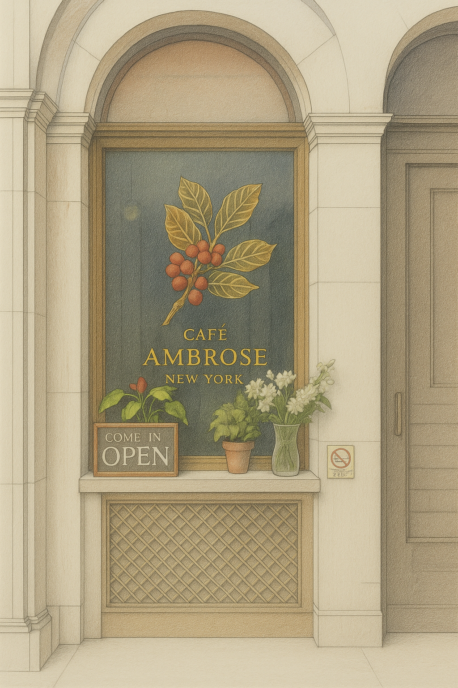
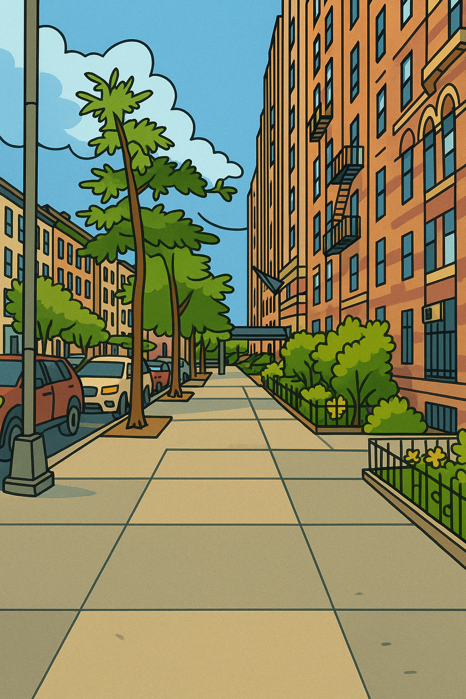
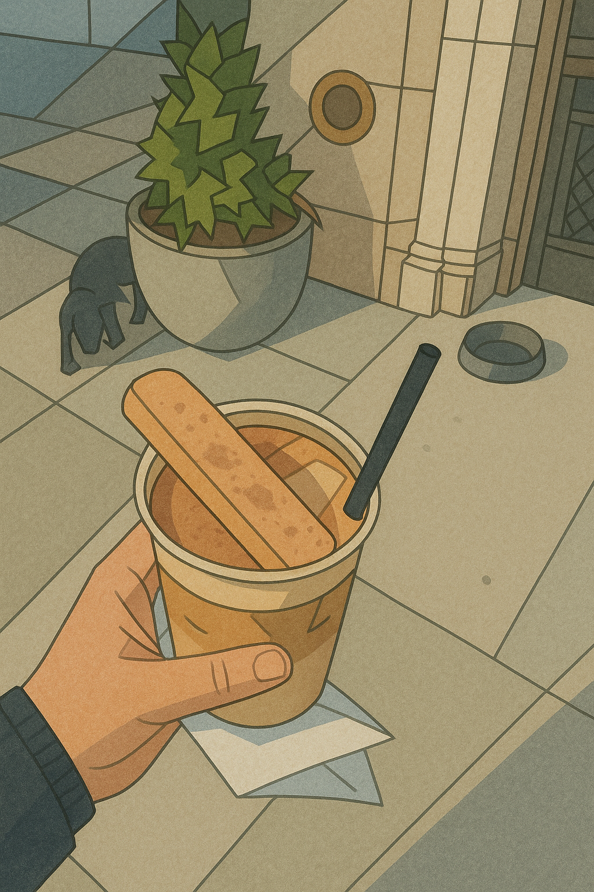
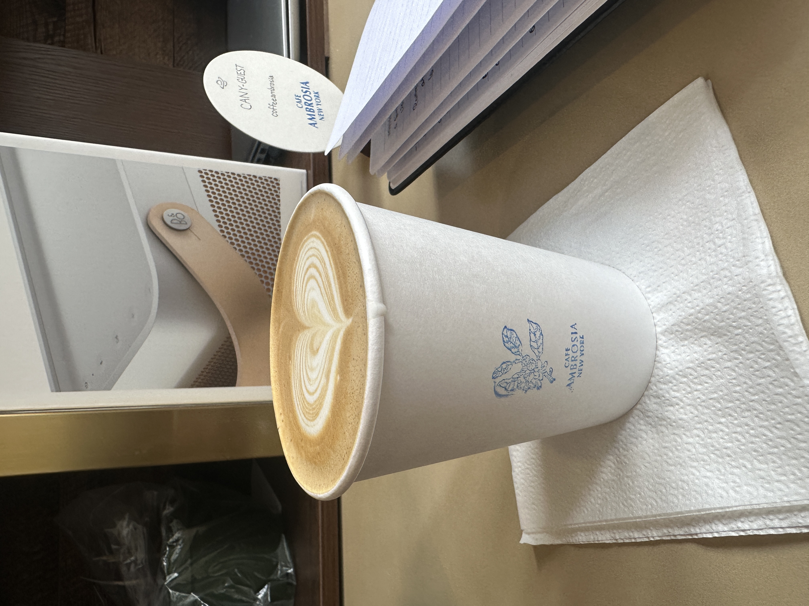
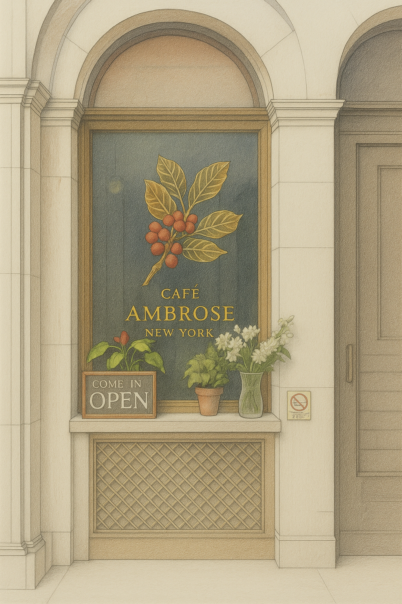
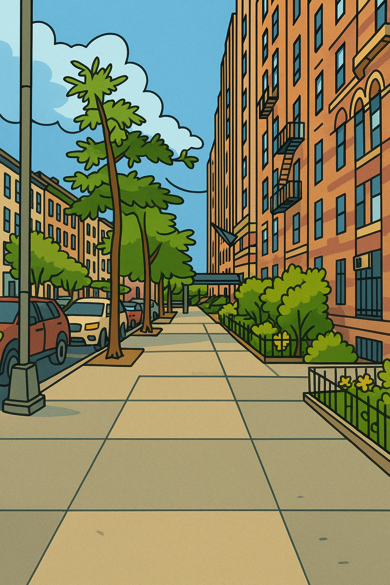
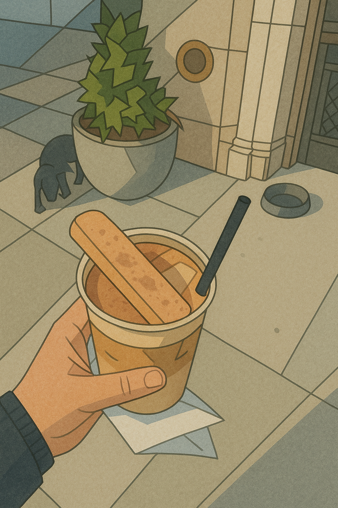
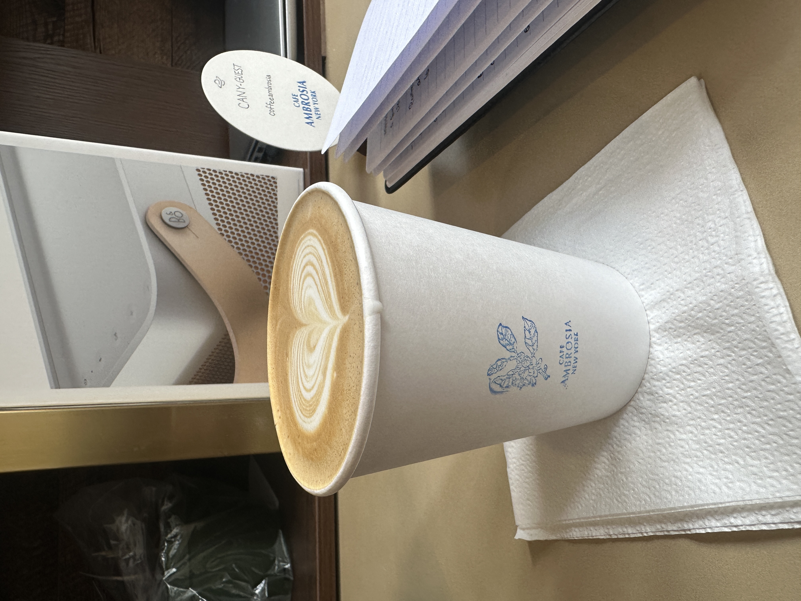
 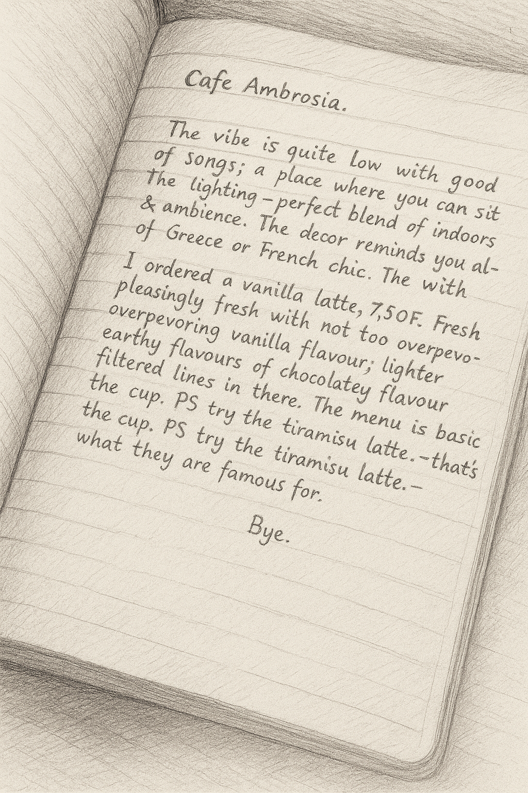
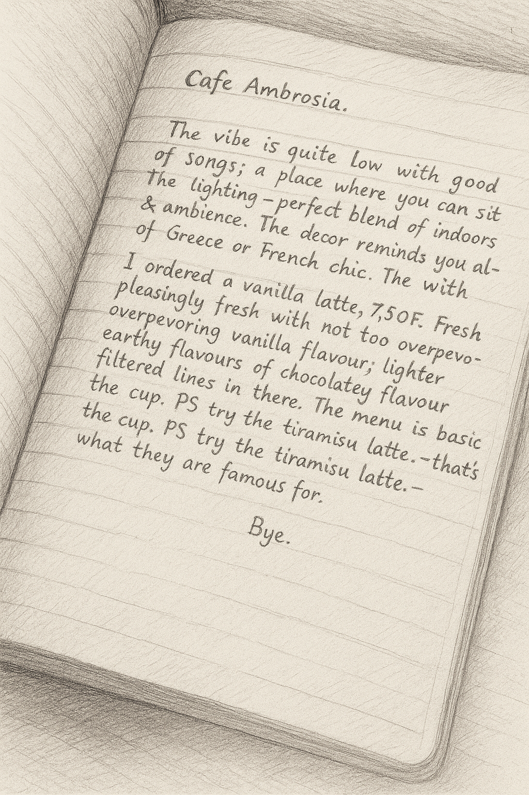
My Two Cents Date: April 27th 2025
The vibe at Cafe Ambrosia is really fun, with a great selection of songs playing in the background. It’s a perfect spot to sit and work, thanks to the beautiful blend of natural and ambient lighting. Open windows, high ceilings, and low-hanging lamps create a relaxed, airy feel. The decor is minimalist, very open, and inspired by Greek and French styles. Plus, there’s free Wi-Fi, which makes it easy to spend the whole day there.
I ordered a vanilla latte (around $7), and it was really fresh. The vanilla flavor wasn’t overpowering — it had a light, earthy taste with subtle hints of chocolate and even a slight tea-like note. The menu is basic but covers everything you’d expect from a good café.
P.S. Be sure to try their Tiramisu Latte — it’s what they’re famous for!
Bye!
My Two Cents Date: April 28th 2025
Ten Thousand Coffee, originally based out of Australia (I think!), has a very modern vibe with minimalist decor. The interior is clean and bright, with white and wooden accents. Although the store itself has mostly low seating, there’s plenty of public seating available outside. When I visited, the café was very busy and a bit noisy — probably because it’s so close to Times Square. I tried to sit and work but found it a little difficult with the heavy customer traffic. That said, it’s still a great spot for a quick walk-in, grab a drink, and take a breather.
For the coffee, I ordered a vanilla latte (around $6) to compare it with other coffee shops. The latte was chocolaty, light-roasted, and very creamy — something you could easily drink every day. I also ordered their Strawberry Cream Latte (about $7), which is one of their newer offerings. It was exceptionally creamy and genuinely tasted like chocolate-covered strawberries — absolutely delicious!
P.S. Definitely try their matcha drinks — they’re super creative with those too!
Bye!
 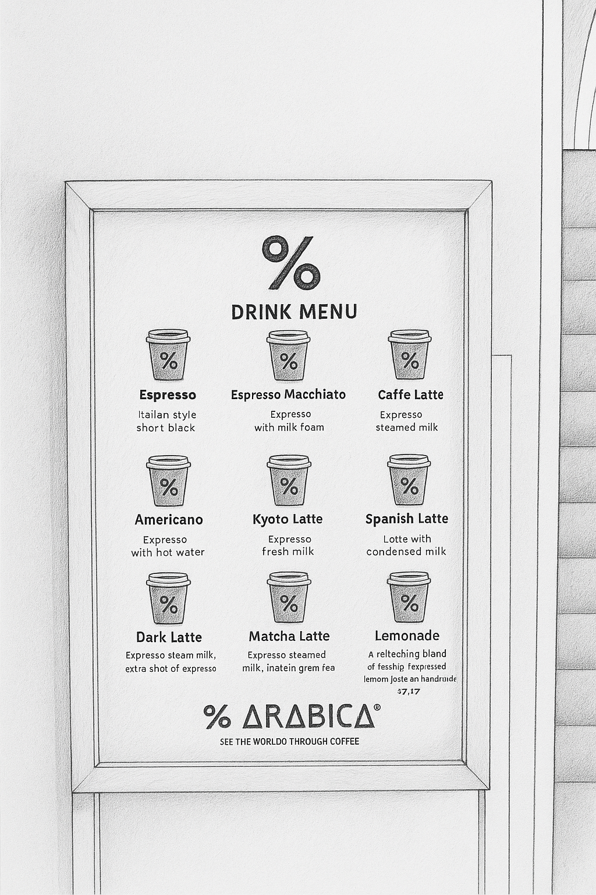
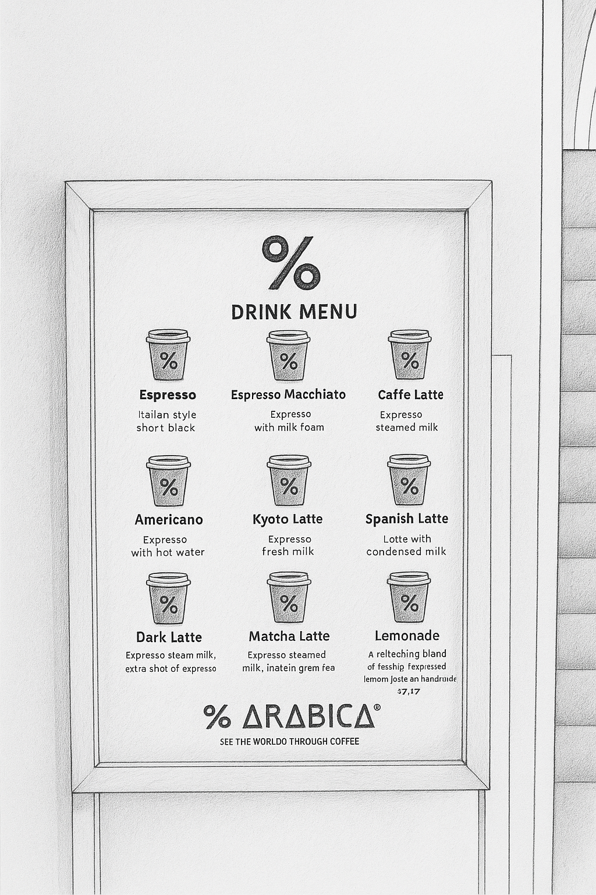

 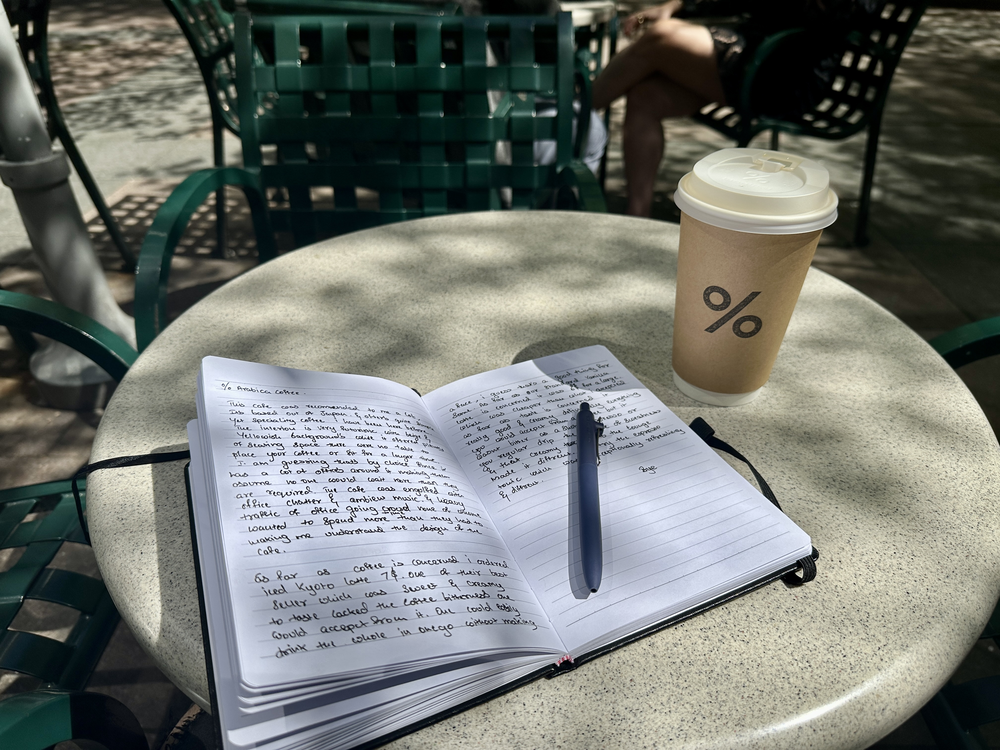
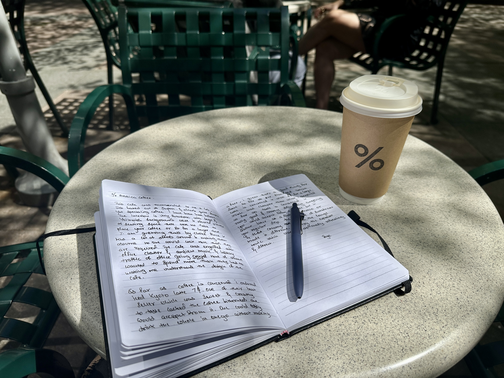
My Two Cents Date: April 29th 2025
This café came highly recommended, and it’s easy to see why. % Arabica, originally based out of Japan, offers simple yet specialty coffee. I’ve been here before, and the interior always stands out — very futuristic with beige and yellowish tones. While there's plenty of space to stand or perch, there were no tables to place your coffee or sit down for an extended time. That might be intentional, as it’s located in an area surrounded by offices. The fast-paced energy — office chatter, ambient music, and a steady stream of professionals — gives you the sense that this is a quick-stop coffee spot, not a sit-down café.
I ordered the Iced Kyoto Latte (around $7), one of their bestsellers. It was sweet, creamy, and easy to drink — with none of the bitterness you'd expect from a cold coffee. Honestly, you could finish it in one go. That may be a win for some, though coffee purists might find it too mellow.
I also tried the Vanilla Latte ($6.50 for a large), which was surprisingly affordable. It had a very creamy texture and delivered everything you’d expect from a well-made coffee, though it lacked the sharp bitterness of an espresso shot or traditional drip brew. The smooth balance of sweetness and richness made it quite distinct.
P.S. Don’t skip the Espresso Tonic — exceptionally refreshing and unlike your usual coffee experience.
Bye!
My Two Cents Date: April 30th 2025
Pull Tab is the brand's only NYC — and possibly only U.S. — location, and its name is inspired by bottle caps you “pull” off (there’s even a painting that illustrates this). The brand hails from China, though its interior doesn’t reflect that heritage directly. Instead, it leans into a cool, gray-toned aesthetic with a hipster vibe — skateboards and surfboards on display — and minimal but sufficient seating for about 12 people. While space is limited, it’s still a decent place to sit and work. And with Bryant Park just around the corner, the location has a strong “Z factor”: grab a drink and head to the park for a more relaxed experience. I know I would.
I ordered the Iced Orange Americano (around $7), one of their newest offerings. It’s literally an Americano poured over orange juice — definitely unexpected. The coffee flavor peeked through but was mostly overtaken by the citrusy sweetness. Still, a fun drink if you’re feeling adventurous.
I also tried their Signature Aerofoam Coffee ($7.50), which seems to be their own invention (possibly patented). It resembled milk topped with a thick, airy coffee foam. As I sipped and stirred, the foam gradually mixed into the milk, subtly shifting the flavor with every sip. Creamy, interesting, and genuinely enjoyable — definitely worth trying at least once.
As for the base Vanilla Latte ($5.25), it was exactly what you’d expect from a reliable everyday coffee. But since Pull Tab’s focus is clearly on specialty drinks, I’d recommend branching out and trying something new.
P.S. Pair your coffee with their butter toast — it was genuinely delicious.
Bye!